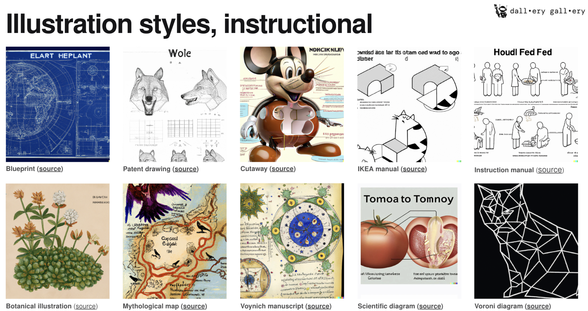
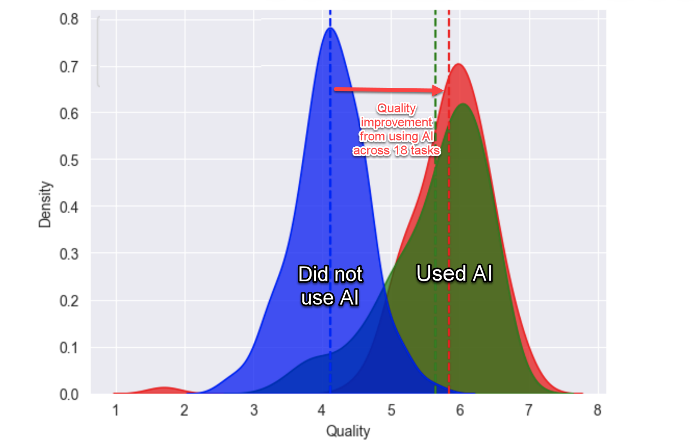
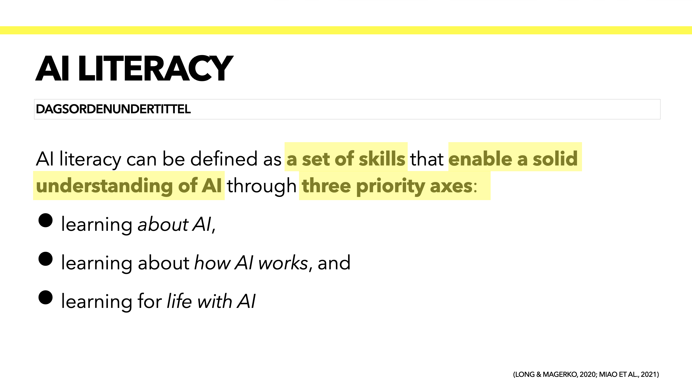
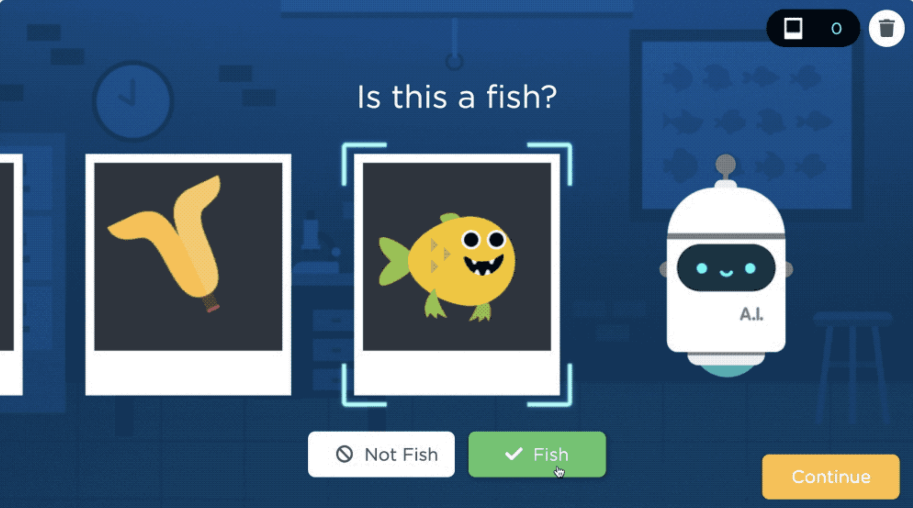
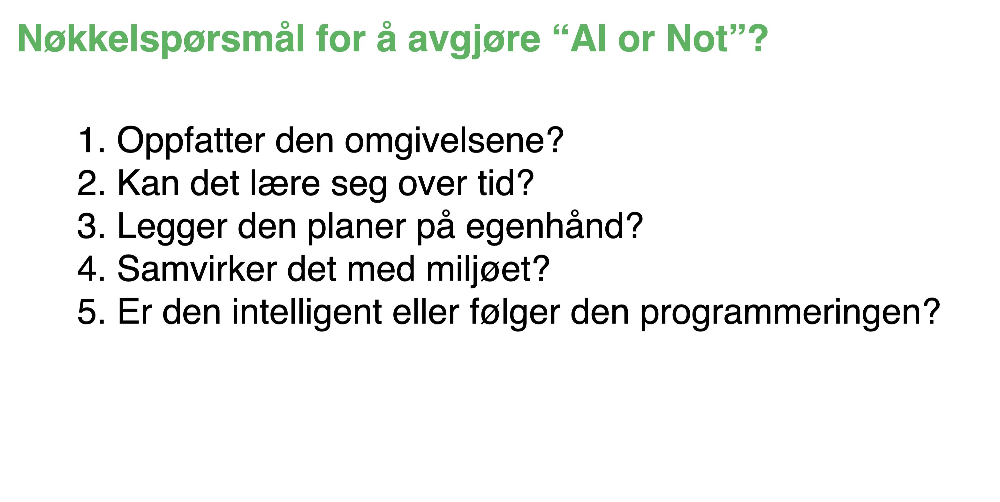
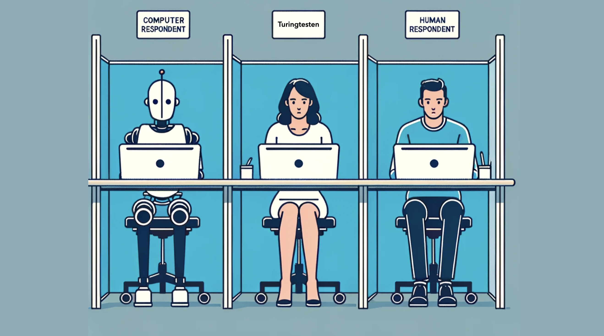

AI Literacy
Hvilke ferdigheter trenger elever i skolen?
Sigrun Lindaas Norhagen, NLA høgskolen · Rådgiverkonferansen VGS, Solstrand · 14.11.23
Prompts i ChatGPT — er det det vi trenger å kunne?

Når vi snakker om KI i skolen, ender samtalen ofte opp med prompts. Hvordan skrive gode ledetekster i ChatGPT? Men er det egentlig det viktigste elevene trenger å lære? Oppbygningen av en god prompt er nyttig å forstå, men AI literacy handler om langt mer enn å formulere spørsmål til en chatbot.
For å være godt rustede borgere i en verden med KI trenger elevene en bredere forståelse: Hva er KI egentlig? Hvordan virker det? Og hva betyr det for livene deres?
DALL-E og hvordan prompte frem ulike visuelle stiler

Et godt eksempel på hva prompting kan være utover ren tekst, er bildegenerering med verktøy som DALL-E. Ved å variere ledeteksten kan du få alt fra tekniske blåkopier og patentskisser til botaniske illustrasjoner og mytologiske kart. Prompten styrer ikke bare hva som vises, men også hvordan det fremstilles — stil, sjanger og visuelt språk.
Dette viser at KI-kompetanse også handler om å forstå hvordan teknologien tolker og transformerer språk til visuelt innhold. Det åpner for spennende pedagogiske muligheter, men krever samtidig kritisk blikk på hva som genereres.
KI gjør alle bedre — og likere

Forskning fra Ethan Mollick og kolleger viser noe interessant: når folk bruker KI, blir kvaliteten på arbeidet generelt bedre — men også mer likt. Grafen viser at de som ikke brukte KI hadde stor spredning i kvalitet, mens de som brukte KI samlet seg rundt et høyere, men smalere nivå.
Dette reiser et viktig spørsmål for skolen: Hvis KI utjevner forskjeller i produksjon, hva blir da verdien av å lære seg noe selv? Og hva slags ferdigheter trenger elevene for å skille seg ut — og for å bruke KI på en meningsfull måte?
Google vs. ChatGPT: To helt ulike logikker

Mange — både elever og voksne — forveksler det å søke på Google med det å spørre ChatGPT. Men de fungerer på fundamentalt ulike måter. Google er som å spørre en bibliotekar: du skriver nøkkelord, får nettsider tilbake, og informasjonen er hentet fra internett. Troverdigheten avhenger av hvem som har laget nettsiden.
ChatGPT derimot er mer som å spørre en venn. Du fører en dialog, og får menneskelignende tekst generert av en språkmodell. Informasjonen er basert på mønstre i treningsdata — ikke på faktiske kilder. Troverdigheten må mottakeren selv vurdere, fordi resultatet avhenger av algoritmene og treningsdataene.
Denne forskjellen er helt avgjørende å forstå. Som Inga Strümke har påpekt: mange elever har rett og slett ikke forstått hva en språkmodell er. En NRK-undersøkelse viste at 1 av 5 elever bruker ChatGPT til skolearbeid — noen uten å forstå at det verken er juks eller magi, men et verktøy som krever kunnskap for å bruke riktig.
Hva er AI literacy?

AI literacy kan defineres som et sett med ferdigheter som gir en solid forståelse av KI gjennom tre akser: å lære om KI, å lære om hvordan KI virker, og å lære for et liv med KI (Long & Magerko, 2020; Miao et al., 2021).
I tillegg til å kjenne til og bruke KI på en etisk måte, handler AI literacy om kompetanser som gjør at man kan vurdere KI-teknologier kritisk, og kommunisere og samarbeide effektivt med KI. Det handler altså ikke bare om å bruke verktøyene, men om å forstå hva de er, hva de kan — og hva de ikke kan.
Hva er nevrale nettverk?

For å forstå KI må man forstå nevrale nettverk — den underliggende teknologien bak moderne språkmodeller og bildegenerering. Et nevralt nettverk består av lag: et input-lag som mottar data, skjulte lag som bearbeider informasjonen, og et output-lag som gir et resultat.
Bildet viser en praktisk øvelse der barn bygger et nevralt nettverk med garn og tape på gulvet. Elevene sitter som «noder» i de ulike lagene og sender informasjon videre til neste lag. På denne måten får de kjenne på kroppen hvordan data flyter gjennom et nettverk — fra input via skjulte lag til output.
Hvordan trenes nevrale nettverk?

Nevrale nettverk lærer ved å trenes på store mengder data. I enkle øvelser kan elevene oppleve dette selv: ved å sortere bilder i kategorier — som «fisk» eller «ikke fisk» — trener de i praksis en modell til å gjenkjenne mønstre. Jo flere eksempler modellen får, desto bedre blir den til å klassifisere riktig.
Aktiviteter som dette gjør det mulig for elever å forstå prinsippene bak maskinlæring uten å måtte programmere. De erfarer hvordan treningsdata påvirker resultatene, og hvorfor skjevheter i dataene kan føre til feil i modellen.
AI or Not? Å skille KI fra vanlig teknologi

En effektiv øvelse for å bygge forståelse av hva KI er — og ikke er — går ut på å stille fem nøkkelspørsmål om ulike teknologier: Oppfatter den omgivelsene? Kan den lære over tid? Legger den planer på egenhånd? Samvirker den med miljøet? Er den intelligent, eller følger den bare programmeringen?
Elevene bruker disse spørsmålene på konkrete eksempler: en brødrister, et ansiktsfilter, en virtuell assistent, en selvkjørende bil og en fjernstyrt robot. Gjennom diskusjonen oppdager de at ikke alt som virker «smart» faktisk er KI — og at ekte KI kjennetegnes av evnen til å lære og tilpasse seg.
Bruk av talegjenkjenning
Talegjenkjenning er et av de mest håndgripelige eksemplene på KI i hverdagen. Når du snakker til telefonen og den omdanner tale til tekst, bruker den nevrale nettverk trent på enorme mengder taledata. For elevene er dette en fin inngang til å forstå at KI allerede er overalt rundt dem — i Siri, i diktering, i undertekster.
Turingtesten

Turingtesten, foreslått av Alan Turing i 1950, stiller et grunnleggende spørsmål: kan en maskin oppføre seg så menneskelignende at vi ikke klarer å skille den fra et ekte menneske? I testen kommuniserer en person med både en maskin og et menneske via tekst, uten å vite hvem som er hvem.
Med dagens språkmodeller har dette spørsmålet blitt svært aktuelt. Mange elever opplever at ChatGPT «forstår» dem — men forstår den virkelig? Turingtesten er en fin inngang til å diskutere forskjellen mellom å simulere forståelse og faktisk å forstå.
Kjennetegn på falske bilder

En viktig del av AI literacy er å kunne vurdere om bilder er ekte eller KI-genererte. Nettsiden Which Face Is Real? lar deg øve på dette: du får se to portretter side om side og må gjette hvilket som er ekte og hvilket som er laget av en algoritme.
Slike øvelser trener det kritiske blikket og gjør elevene oppmerksomme på at visuelt innhold ikke lenger er til å stole på bare fordi det «ser riktig ut». Det er en kompetanse som blir stadig viktigere i en verden med deepfakes og syntetiske medier.